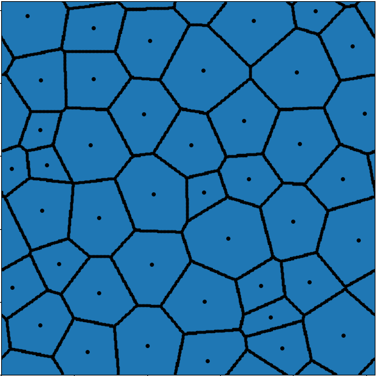
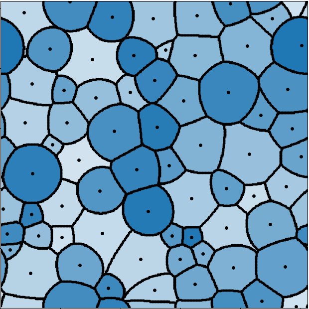
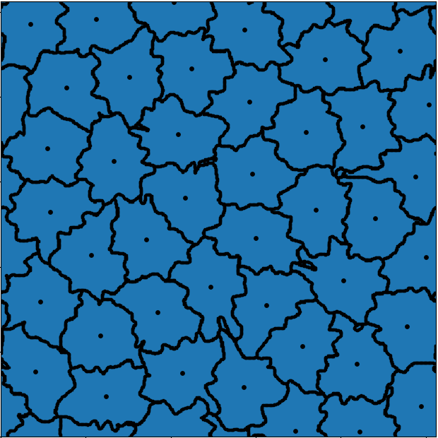

Incompressible Cell Shapes via Optimal Transport

Many biological systems such as cell aggregates, tissues or bacterial colonies behave as unconventional systems of particles that are strongly constrained by volume exclusion and shape interactions. Understanding how these constraints lead to macroscopic self-organized structures is a fundamental question in e.g. developmental biology. To this end, various types of computational models have been developed: phase fields, cellular automata, vertex models, level-set, finite element simulations, etc. We introduce a new framework based on optimal transport theory to model particle systems with arbitrary dynamical shapes and deformability. Our method builds upon the pioneering work of Brenier on incompressible fluids and its recent applications to materials science. It lets us specify the shapes of individual cells and supports a wide range of interaction mechanisms, while automatically taking care of the volume exclusion constraint at an affordable numerical cost.
The project is hosted on GitHub, under the permissive MIT license.
Please check the gallery of examples !
Framework
As a first description, our method can be seen as a generalized Voronoi tessellation method with strict volume constraints: since volume is most often the easiest experimental quantity to measure, we treat it as a first-class input of the model. This is in contrast with other approaches which classically preserve volumes using soft constraints and relaxation forces towards a preferred size.
To achieve this goal, we rely on the notion of Laguerre tessellation which has recently appeared in various different contexts, in particular the simulation of incompressible fluid flows, of crowd motion or for the modeling of polycrystalline materials.
For a given set of positions \(x_1,\ldots,x_N\) in a domain \(\Omega\) and volumes \(v_1,\ldots,v_N\), the \(i\)-th particle is represented by the Laguerre cell defined by
which depends on:
a cost function \(c:\Omega\times\Omega\to[0,+\infty)\) which is the main modeling element in our approach: classicaly \(c(x,y) = |y-x|^2\) but other choices are considered to model the physical deformability properties of the particles (stiffness, mass, shape etc).
a set of Kantorovich potentials \(w_1,\ldots,w_N\) which can be shown to be uniquely defined to satisfy the volume constraints
\[\forall i\in\{1,\ldots,N\},\,\,\,\mathrm{volume}(\mathscr{L}_i) = v_i\]Computing these potentials is the main technical part of our model: it is well known that this optimisation problem is equivalent to an optimal transport problem.
Three examples of Laguerre tessellations which can be compared to three types of biological tissues are shown below. We consider three different cost functions and random positions and volumes.
|  |  |  |
In a dynamical setting, at each discrete time step, we compute and apply forces to the centroid positions \(x_i\) and compute a new Laguerre tessellation of the space. The main force that we consider is a so-called incompressibility force which models repulsion interaction between neighbouring particles. Then, extracting the relevant geometrical information from the Laguerre cells and translating it into biophysical properties and forces is the key modeling task that defines the behaviour of our simulations. We can also update the volumes and/or the cost functions to model morphological changes, or to include other events such as the creation or deletion of particles.
Citation
If you use ICeShOT in a research paper, please cite the arXiv preprint :
@misc{diez2024optimaltransportmodeldynamical,
title={An optimal transport model for dynamical shapes, collective motion and cellular aggregates},
author={Antoine Diez and Jean Feydy},
year={2024},
eprint={2402.17086},
archivePrefix={arXiv},
primaryClass={q-bio.QM},
url={https://arxiv.org/abs/2402.17086},
}
Diez A., Feydy J., An optimal transport model for dynamical shapes, collective motion and cellular aggregates, arXiv preprint: arXiv2402.17086, 2024
Table of contents
Tutorial
Gallery